Rozpočty podle témat
Odkud přicházejí. Kam směřují. Co přinášejí. Prozkoumejte data za veřejnými rozpočty — od srovnání zemí až po detail jednoho města.
Prozkoumat reportyJak peníze dorazí ke službám
Částky vstupující do rozpočtů a cesty přes prostředníky ke školám, péči, důchodům a dávkám.
MF ČR · Census · SSA · OECD · národní účty27 reportů k prozkoumání
Napříč zeměmi
Srovnání zemí
Sledujte téma napříč zeměmi. Původní zdroje a rozsah dat najdete v každém reportu.
Kam peníze jdou
Velké výdajové oblasti státu: kolik stojí, co za to je a jak se to mění.
Školství
Celý tok od ministerstva přes kraje a obce až k typům škol, bez dvojího započtení transferů.
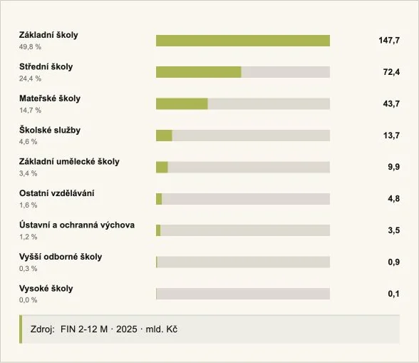
Zdraví
Výdaje, pracovní síla, využití nemocnic a zdravotní výsledky.
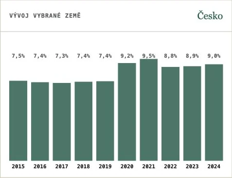
Doprava
Výdaje, jejich investiční a provozní skladba, úrovně vlády, síť a desetiletý vývoj.
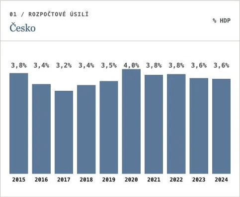
Výdaje na obranu
Výdaje vůči HDP, závazek NATO a nejpodrobnější dostupné řádky národních rozpočtů.
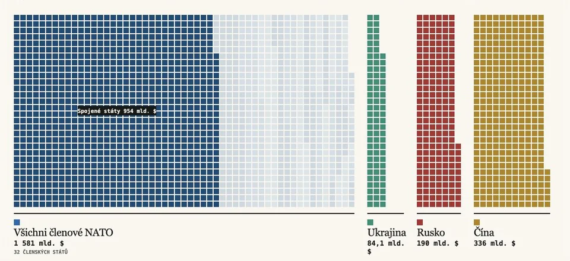
Daně, transfery a příjmová nerovnost
Příjmová nerovnost před daněmi a transfery a po nich; chudoba a sociální výdaje zvlášť.
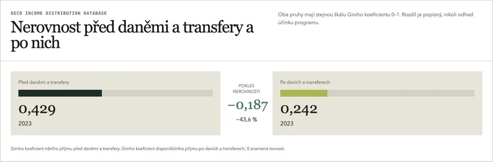
Odkud peníze jsou
Daně, úrovně vlády a peníze, které přitékají z Evropské unie a odtékají do ní.
Jak peníze dorazí ke službám
Částky vstupující do rozpočtů a cesty přes prostředníky ke školám, péči, důchodům a dávkám.
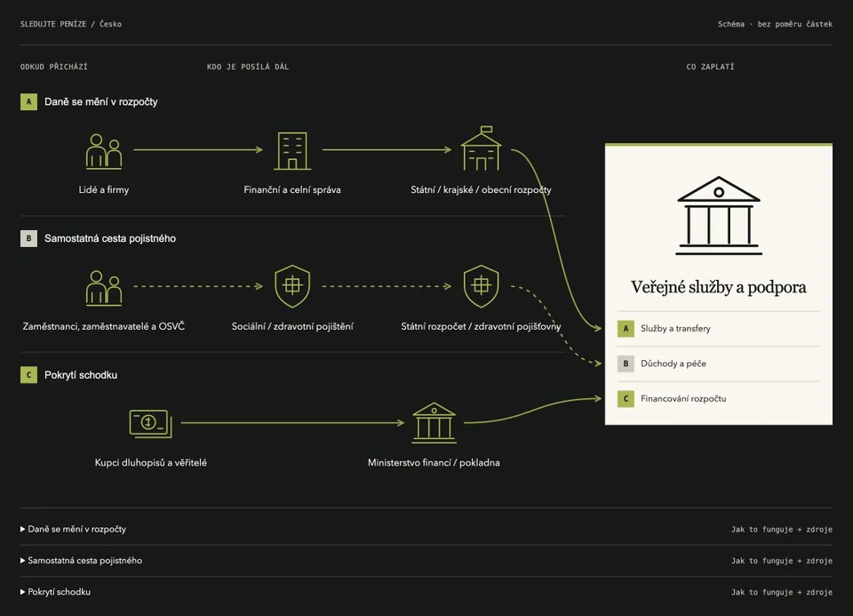
Odkud stát bere peníze
Daňový mix, úrovně vlády, vývoj v krizích a cesta k obecním transferům.
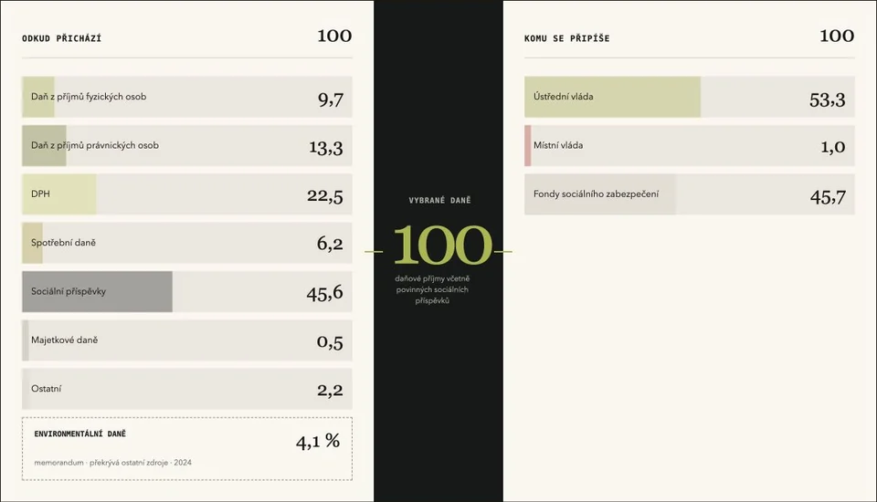
Daňové zatížení
Zdanění práce, firem a uhlíku a daňová pravomoc obcí podle definic OECD.
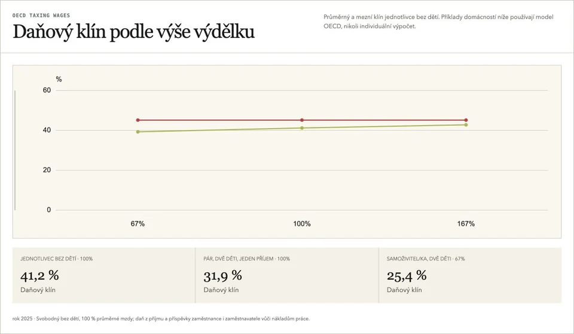
Peníze mezi zeměmi a EU
Přiřazené výdaje, národní příspěvky a vysvětlení, proč nejde o jeden řádek státního rozpočtu.
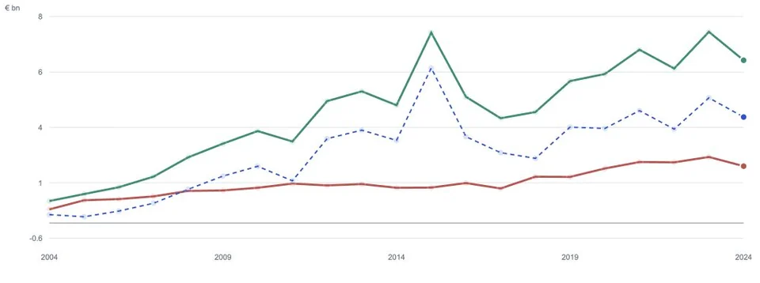
Ekonomika, průmysl a obchod
Základna, ze které se veřejné rozpočty platí: výkon ekonomiky, výroba a zboží překračující hranice.
Kde lidé pracují a kdo je zaměstnává
Tři odvětví, všech 45 druhů služeb, veřejní zaměstnavatelé a lidé mimo pracovní sílu.
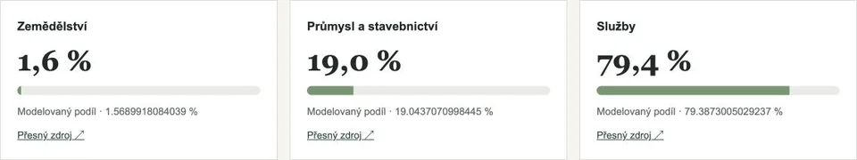
Ekonomika v kontextu
Globální dlouhé řady, hospodářský cyklus, pokrytí a datový kontrakt pro další ekonometrické reporty.
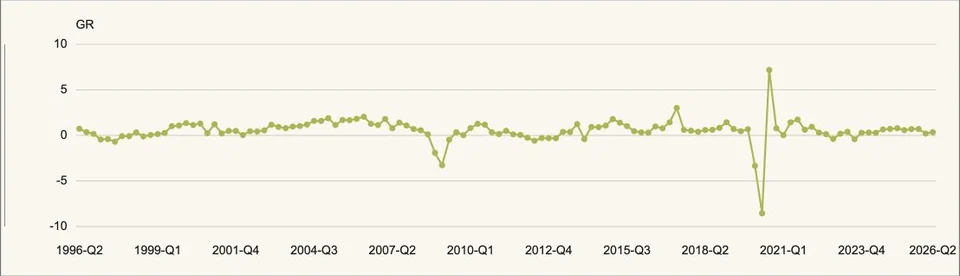
Průmysl měsíc po měsíci
Která odvětví rostou a která klesají. Měsíce, roční souhrny a dohledatelné národní i evropské zdroje.
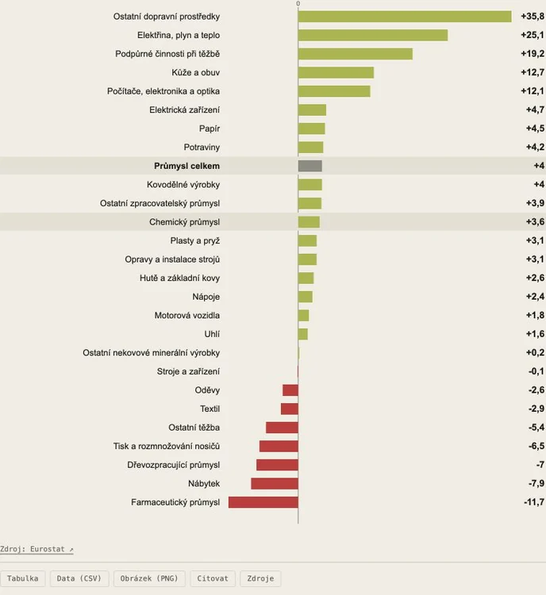
Uvnitř průmyslu
Firemní přebytek a investice, kapacity, výrobní objemy a konkrétní výrobky. Data Eurostatu od roku 2010.
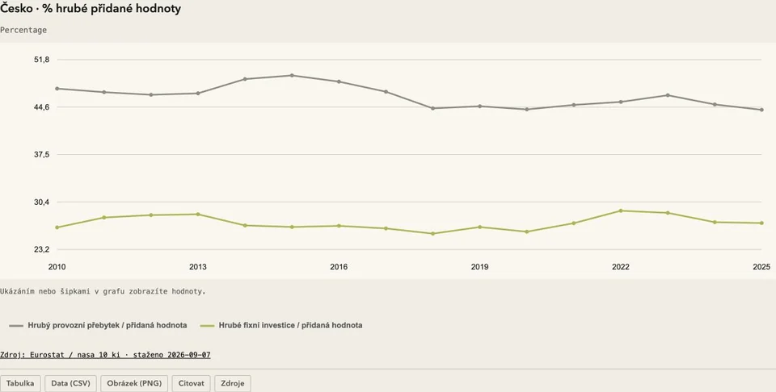
Zahraniční obchod
Dovoz, vývoz, obchodní bilance, partneři a zboží v interaktivním průzkumníku UN Comtrade.
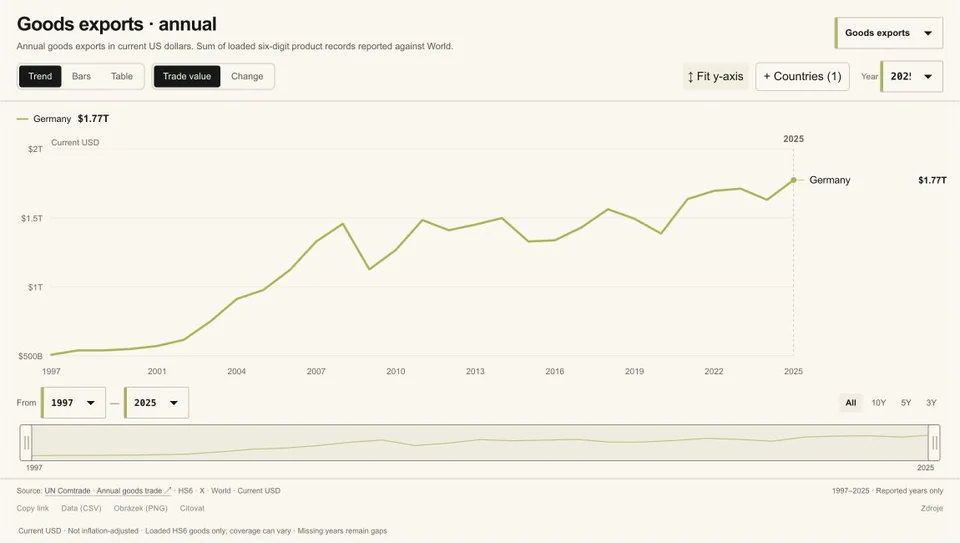
Světový obchod s ropou a plynem
Mapa dovozu surové ropy, LNG a zemního plynu od vykázaného původu k trhu, ročně i měsíčně.
Náhled grafu zatím není dostupný
Otevřít reportObchod kolem Ruska
Všichni dodavatelé Kazachstánu a Kyrgyzstánu. Roční a měsíční obchod, výrobkové vazby a vývoz do Ruska.
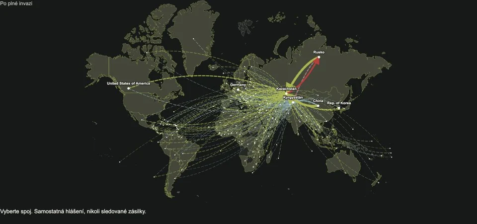
Automobilový průmysl
USA, EU, Čína a zbytek světa. Měsíční obchod s osobními a lehkými vozidly, těžkými nákladními vozidly a autodíly.
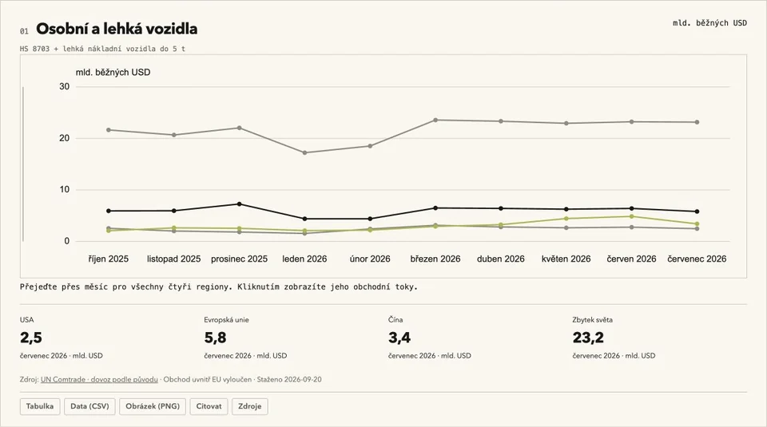
Globální produktové trhy
Sledujte chytré telefony, vozidla, léčiva, čipy a baterie od vykázaného původu až po dovozní trh.
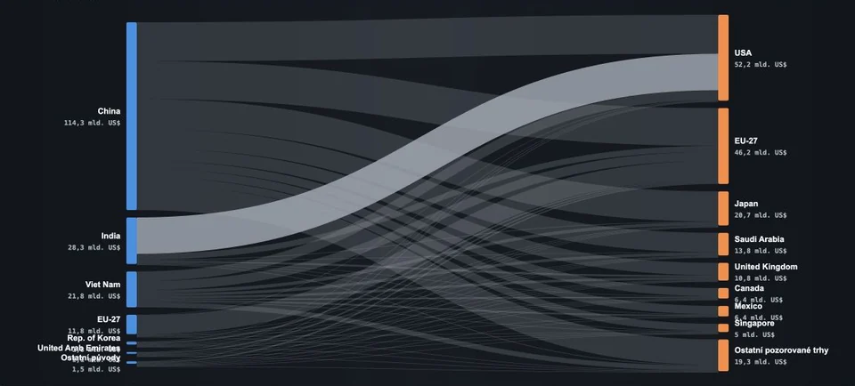
Společnost a stát
Kdo v zemi žije, kdo jí vládne a co stát přímo vlastní nebo spravuje.
Stárnutí populace
Oficiální populační projekce, věková struktura a demografická kalkulačka; fiskální předpovědi neděláme.
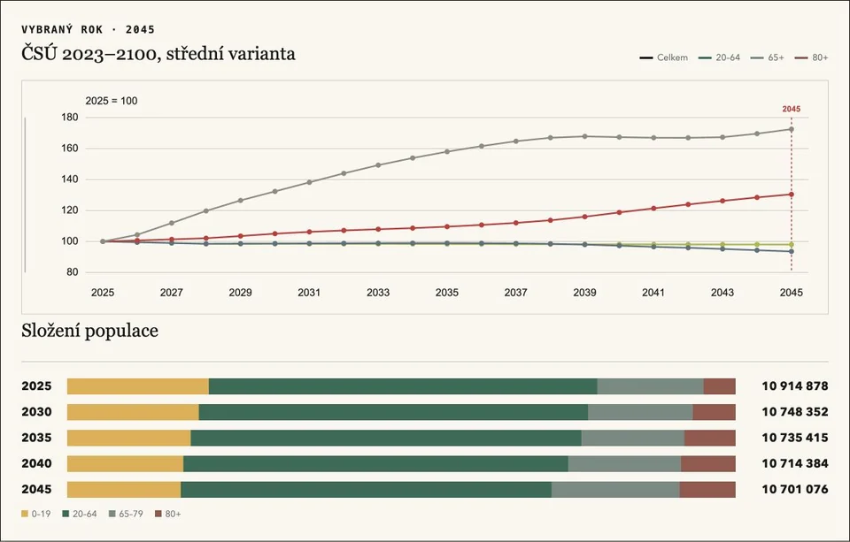
Evropská migrace
Migrační toky a rozhodnutí o ochraně ve 33 evropských zemích.
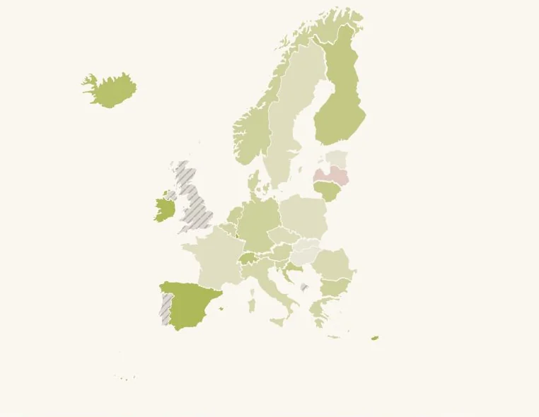
Evropská politika
Kdo vládl, co slíbil a jak se vyvíjelo HDP a dluh v původním benchmarku deseti zemí.
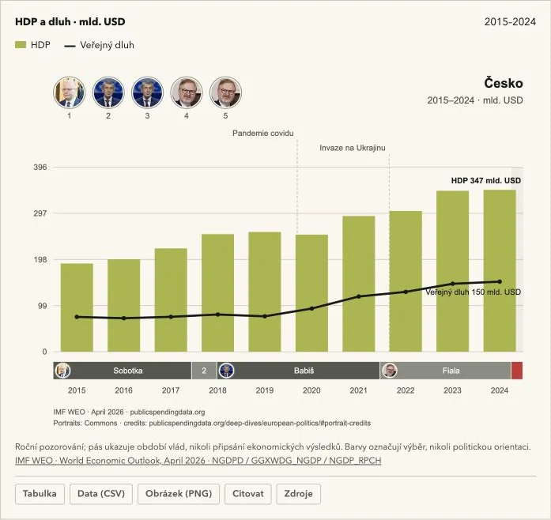
Státní podniky
Katalog třiceti největších celostátně ovládaných podniků, s výnosy přepočtenými na eura.
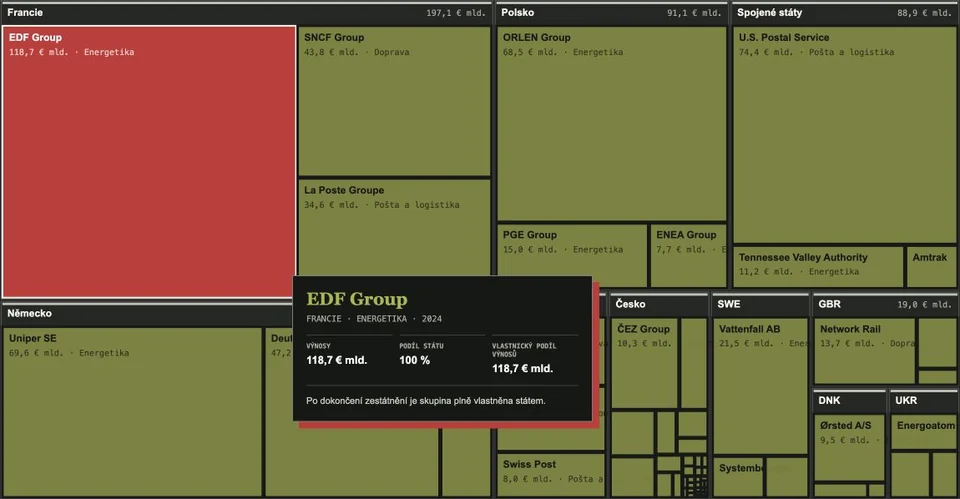
Hlavní města
Rozpočtové plány hlavních měst, návštěvnost a srovnání ve skupinách podobných měst.
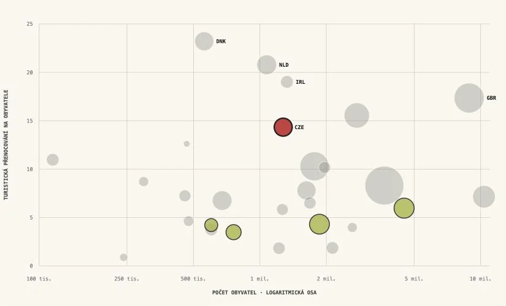
Pocta Hansi Roslingovi
Sedm vzdělávacích pohledů na zdraví, prosperitu, výdaje, rozdělení, populaci a běžný život.
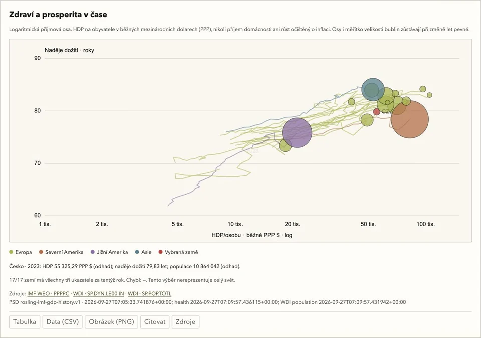
Společná struktura
Co v každém srovnání zemí najdete
Výdaje země, kapacitu a výsledky systému, vývoj v čase a srovnání se stejnou skupinou zemí. Pořadí sekcí je ve všech reportech stejné. Regionální reporty tento kontrakt nesdílejí, protože jdou do detailu jednoho rozpočtu.
Vybraná země
Historie
Srovnání
Metodika
Jedna země, jedno město
Regionální reporty
Bližší pohled na jednu zemi nebo město — až k detailům jejich rozpočtů.
Česko
Státní rozpočet a veřejný sektor v detailu.
Plánovač rozpočtu 2027
Projděte návrh podle funkcí, změňte výdaje nebo příjmy a sledujte dopad na schodek.
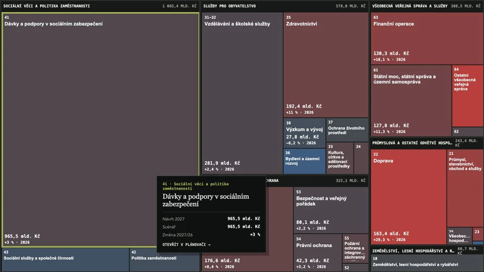
Veřejná zaměstnanost
Úplná institucionální hranice, desetiletá řada a oddělené zdrojové vrstvy bez dvojího započtení.
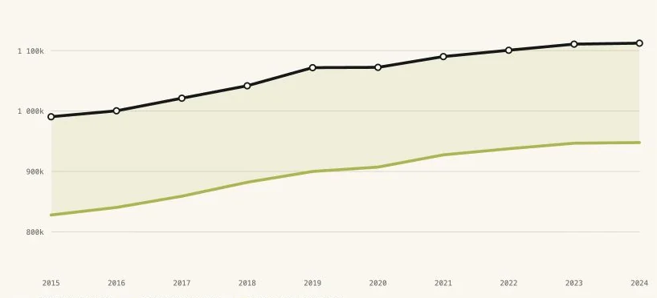
Česko v pohybu
Sledujte obchod, důchody, finance a peníze v české ekonomice s jasnými účetními hranicemi.
Náhled grafu zatím není dostupný
Otevřít reportŽádné reporty nenalezeny. Zkuste jiné téma nebo zdroj.